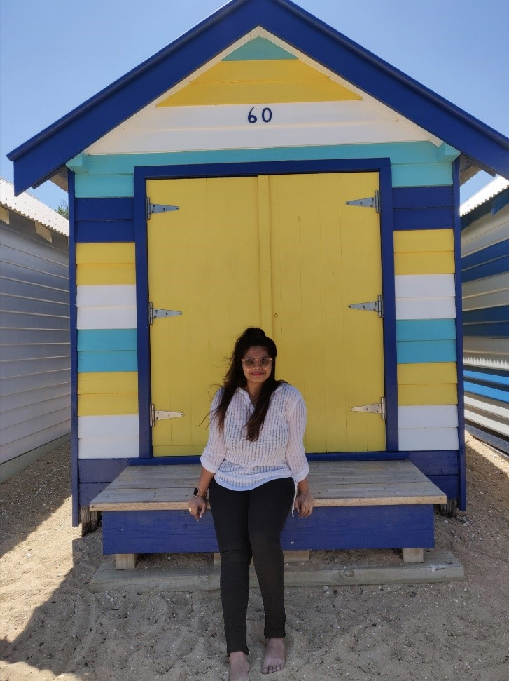

I am Aseema and I am your Certified WILDFIT Coach. This is my origin
story!
My Story
For years, I struggled with weight and body image issues, fallen prey to
many fad diets, spent thousands on personal trainers and nutritionists,
lost and gained an upwards of 15 kgs multiple times in a decade. All the
"dieting" completely messed my metabolism and even if I ate less food, I
would put on weight. I remember being so puzzled thinking I must be
"cursed". This led to all kinds of body image issues, I was never
satisfied with the way I looked and never felt fully confident. I would
lose some weight and start feeling good and then life would throw a
curve ball and that’s it. I would lose all the momentum and find myself
back at square one. I WAS TIRED.

To add on this, I used to train a lot in the gym without fully
understanding what would work best for my body. I was misled by all the
fitness trends and it led to a knee injury that made me put things into
perspective. In November 2019, the MRI report revealed that I had
cartilage damage in my right knee. There was no remedy for this and I
was asked to accept this to be my way of life. At this point, I wasn’t
able to walk beyond 12000 steps without discomfort, wasn’t able to wear
heels, wasn't able to go hiking, wasn’t able to do some of my favourite
exercises. I WAS DEPRESSED.
He who has health has hope and he who has hope, has everything.
-Thomas Carlyle
In 2020, COVID made things even worse, the level of physical activity
reduced further and my weight started to climb. I was truly puzzled
because I was following the very common concept of "everything in
moderation" then why was I still putting on that much weight? I WAS
CURIOUS My curiosity led me to do a deep dive into the world of
nutrition and in February 2021, I started my very own WILDFIT journey!
When I attended the Masterclass for WILDFIT with Eric Edmeades (Founder
of WILDFIT), something struck me. It was unconventional. No one spoke
about tracking calories, maintaining food diaries, exercising to death,
haha!!! On the contrary, I heard for the first time about food
psychology and how it governs the food decisions we make day in and day
out. I WAS INTRIGUED. I was convinced that I need to give this a try and
in March 2021, I had my very first session for WILDFIT. I had never
experienced anything like this. The concepts, the information, the
guidance and the sheer brilliance in which this program was constructed
brought about fundamental changes in me in a matter of 90 days.
Here is a snapshot of my wins :
Released 14kgs weight permanently!
NO sugar cravings
Regulated hormonal health which led to NO PMS and NO menstrual
cramps
NO knee pain or any other body pain.
Recalibrated my sense of taste and smell
Better skin and hair
Energy levels were at an all-time high!
Became much more positive about life overall!
I vividly remember that day, when I was in week 7 of the challenge when
I jogged painlessly for 20 mins, for the first time since 2019. My
issues with the knee had disappeared and I WAS GRATEFUL!!
I am here to tell you that no matter where you are in your health
journey, WILDFIT will help you kick it up a notch, if not launch it to
new levels! I have witnessed WILDFIT clients heal from TYPE 2 Diabetes,
Hypertension, Thyroid irregularities, skin problems, blood sugar issues,
PCOD, depression and countless other health problems.
So let me show you how WILDFIT can help you level up in life. Book your
35 min free DISCOVERY CALL to discuss your health goals with me.
Our bodies have infinite wisdom Good nutrition enables us to listen to our bodies and ultimately lead a healthy and happy life.